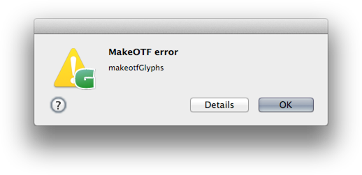
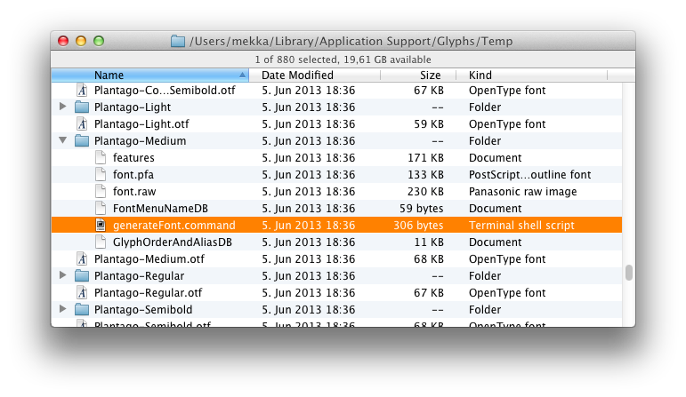
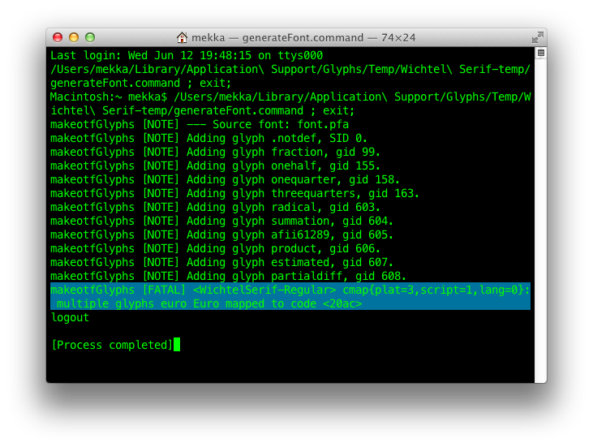

This sometimes happens: You try to export a font via File > Export but all you get is a weird error message that says makeotfGlyphs.
Now, this means that the built-in makeotf command choked on the font data it was supplied with. But to find out what precisely the problem was, we need to run the makeotf command ourselves and see what happens.
To do that, you go into the Scripts folder via the Script > Open Scripts Folder command. It will show the Script folder in Finder. There you may find various stuff but what we are interested in now, is the Temp folder.
Now, inside the Temp folder, you will find OTFs and a bunch of subfolders containing all your recent font projects, neatly organized in subfolders. Each folder contains a number of files that are necessary for producing your OTF. One of them is called generateFont.command:
Double click it and your Terminal will open. There, the makeotf command will spit out all sorts of notifications, documenting the production process for your OTF. Towards the end of the output, just above from where it says Process completed, you will most likely see a detailed error message like this one:
In this case, it says, ‘multiple glyphs euro Euro mapped to code 20ac’. This means that there are two Euro signs inside the font, one called euro, another one called Euro, and they both have the Unicode 20AC. Now you know what to do: Go back into Glyphs and delete one of the Euros, then export again.
Of course, your mileage may vary greatly. Plus, we have been hard at work making Glyphs give you descriptive error messages if something goes wrong. There is also a detailed Error Handling chapter in the Glyphs Handbook describing the various messages that may appear.